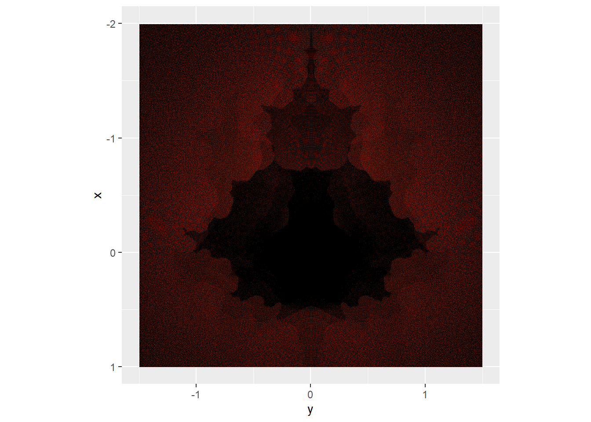
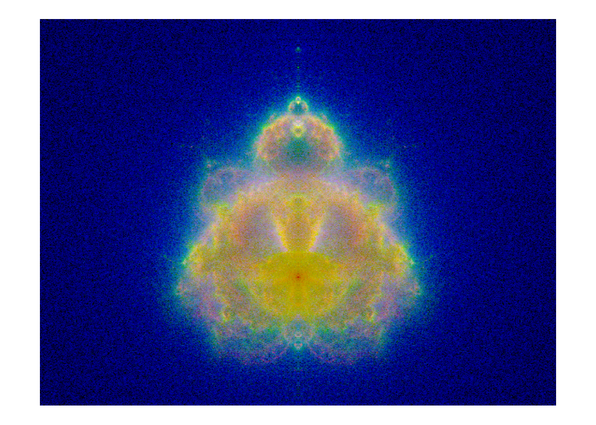

In this writeup, I continued my exploration of the beautiful Mandelbrot set fractal by examining other ways of exploring the convergence of the set. I discovered an amazing resource in the “Scientific Computing on a Laptop” book available on Github. A link to their implementation of the Mandelbrot set is here and a link to the Buddhabrot set is here.
The original inspiration is written in Python so a large portion of my effort here was to reimplement the various functions in R. This was an interesting challenge as the two languages are different enough that I was required to reimplement large portions.
The difference in implementation between the Mandelbrot and Buddhabrot sets are what is used to color the individual pixels of the escaping points. In the Mandelbrot set, a point that hasn’t escaped within a certain number of iterations is colored black while a point that escapes is colored according to the number of iterations that it takes to escape. In the Buddhabrot set, an initial point is iterated over and if it escapes, each value that it takes on as it iterates is recorded as it’s escape trajectory. These trajectory points form the basis of a new coloring scheme and are used to color a region according to how many escaping points travel through that particular region. Truly beautiful visualizations, such as the one in the “Scientific Computing on a Laptop” book, use multiple color channels such as red/green/blue and the regions are colored within each channel according to how long the escape trajectory a particular point has.
Initial Setup
The main work of this visualization is to create the helper functions that process individual points. The first is the Buddhabrot trajectory function that takes arguments of a complex point and max iterations and stores each point it visits as it escapes. It does this by creating an empty list the same length as the maxiter input before iterating through the Mandelbrot set relationship recording each point c takes on as it escapes. The function ends when abs(c) > 4 to keep the points within a radius of 2, though this should perhaps be expanded as it gives a circle due to the starting point being recorded.
Code
library(RColorBrewer)library(ggplot2)library(dplyr)library(ash)library(pbapply)library(readr)# Helper function that returns the trajectory of an initial point ctrajectory <-function(c, maxiter) { z <-data.frame(comp =rep(0, maxiter)) # allocate space up to maxiteration z$comp[1] <- c # store initial point in z c0 <- c # store initial c as c0 so it isn't overwritten in loop k <-0# initialize counter for use outside loopfor (i in1:(maxiter-1)) { k <- i # record loop number c <- c^2+ c0 # compute next trajectory point z$comp[i+1] <- c # add new point to trajectoryif (abs(c) >4) # break for loop if |c| > 4break }if (k != (maxiter -1)) { # return value only if not at max iteration z[1:(k+1),] }}
Sampling on grid
An initial quick method is to sample points from a regularly spaced grid, the same as calculating values for the Mandelbrot set. The results shown below worked well aside from a visual artifact that arose from the initial grid.
Code
x <-seq(-2, 1, length.out =1000)y <-seq(-1.5, 1.5, length.out =1000)if(!file.exists("BBdata/grid_sampling.csv")){ cgrid <-expand.grid(x, y*1i) # expands x and y to 1000 x 1000 grid v1 <- cgrid$Var1+cgrid$Var2 zgrid <-unlist(pblapply(X = v1, FUN = trajectory, maxiter =10), use.names =FALSE) data2 <-data.frame(x =Re(zgrid), y =Im(zgrid))write_csv(data2, "BBdata/grid_sampling.csv")}# Sampling grid of complex plane same way as done in Mandelbrot set generation# Problem noticed that it creates a regular grid of points on output trajectory. data2 <-read_csv("BBdata/grid_sampling.csv", show_col_types =FALSE)ggplot(data = data2, aes(x=y, y=x, fill =after_stat(-log(density)/max(log(density))))) +stat_bin_2d(bins =c(length(x), length(y)), geom ="raster", interpolate =TRUE, drop =FALSE) +lims(y =c(1, -2), x =c(-1.5, 1.5)) +#theme_void() + theme(legend.position ="none") +coord_equal() +scale_fill_gradientn(colors =c("black","red"),na.value ="black")

Random sampling
In the “Scientific Computing on a Laptop”, an alternate method was explored for picking points - sampling of points from a circle of radius 2 in the complex plane. To speed the algorithm it up, I included two helper functions that exclude points that are computed as part of the Mandelbrot set, the main bulb and secondary bulb of the set. The relationship that the functions use was detailed in the same source.
Code
############## Alternative method to . # Finds points known to be in the main cardioid of mandelbrot setin_main_cardioid <-function(c) { q <- (Re(c) -1/4)^2+Im(c)^2 q*(q + (Re(c) -1/4)) <=Im(c)^2/4}# Find points in period 2 bulb of mandelbrot setin_period2bulb <-function(c) { (Re(c) +1)^2+Im(c)^2<=1/16}# Sample complex numbers randomly from circle in complex plane radius default 2uniform_sampling <-function(radius =2) { c <-0while (in_main_cardioid(c) |in_period2bulb(c)) {# Random radius 0 to radius, random angle -pi to pi times i# Square root of radius gives uniform sampling over circle. c <-sqrt(runif(1,0,radius^2)) *exp(runif(1, -pi, pi)*1i) } c}if(!file.exists("BBdata/zs.csv")) {# Sample points; more replications = better picture + longer compute time uniform_sampling_v <-replicate(10000000, uniform_sampling(radius =3))# Due to length that this takes, a progress bar on lapply is useful zs <-unlist(pblapply(X = uniform_sampling_v, FUN = trajectory, maxiter =100), use.names =FALSE) real_zs <-data.frame(x =Re(zs), y =Im(zs))write_csv(real_zs, "BBdata/zs.csv")}zs <-read_csv("BBdata/zs.csv", show_col_types =FALSE) %>%mutate(zs =complex(real = x, imaginary = y), .keep ="none")binsize =700ggplot(data =data.frame(zs), aes(x=Im(zs), y=Re(zs), fill =after_stat(-log(density)/max(log(density))))) +stat_bin_2d(bins =c(binsize, binsize), geom ="raster", interpolate =TRUE, drop =FALSE) +lims(y =c(1, -2), x =c(-1.5, 1.5)) +#theme_void() + theme(legend.position ="none") +coord_equal() +scale_fill_gradientn(colors =c("black","red"),na.value ="black")
I was much more pleased with this iteration of the function and was happy to leave it here as I worked on coloring next.
Color channels
To color the Buddhabrot, the prior iterations used ggplot’s ability to do 2d binning and color each point by it’s count. The advantage of this is that the computation is a straightforward mapping of count to color.
A variant method often called the Nebulabrot is to include multiple color channels where points are colored by a combination of R, G, and B. The three color levels are still determined by 2d binning but each channel’s levels are determined by a different cutoff for max iterations. One possible example is the RGB channels have max iteration cutoffs of 2000, 200, and 20 respectively.
The following code:
Samples one million points from a circle of radius 2 in the complex plane
Calculates the trajectory of each of these with a max length of 2000 points
Creates a dataframe of the points
And finally splits the dataframe into three channels:
The blue channel includes max lengths of 20 or less
The green channel includes max length of 21 to 200
And the red channel includes max length of 201 to 2000
Code
# generate initial sampling of pointsif(!file.exists("NBdata/sample_points.csv")) { sample1 <-replicate(1000000, uniform_sampling(radius =2))write_csv(data.frame(x =Re(sample1), y =Im(sample1)), "NBdata/sample_points.csv")}# Helper function to find first element of each list, returns 0 if NULLfirst_element <-function(x) {if(!is.null(x)) { x[[1]] } else {0 }}# find trajectories with max iterations of 2000if(!file.exists("NBdata/trajectory2000.csv")) { sample1 <-read_csv("NBdata/sample_points.csv", show_col_types =FALSE) %>%mutate(zs =complex(real = x, imaginary = y), .keep ="none") zs <-pblapply(X = sample1, FUN = trajectory, maxiter =2000)# Find length of each trajectory zs_length <-sapply(zs, length) start_point <-sapply(zs, first_element)# create dataframe to include: initial point, path that point follows, and length of trajectory zs_df <-data.frame(initial =rep(start_point, times = zs_length), path_point =unlist(zs), length =rep(zs_length, times = zs_length)) unlist_zs <-unlist(zstst) real_zs <-data.frame(x =Re(unlist_zs), y =Im(unlist_zs))write.csv(zs_df, "NBdata/trajectory2000.csv", row.names =FALSE)}zs_df <-read.csv("NBdata/trajectory2000.csv")# Extract points in channels by iteration length: 20, 200, 2000channel20 <- zs_df[which(zs_df$length <=20),]channel200 <- zs_df[which(zs_df$length >20& zs_df$length <=200),]channel2000 <- zs_df[which(zs_df$length >200),]
Increase Channel Size
Currently the 200 and 2000 channels are sparse as a random sampling of a millions points will find mostly low path length trajectories. To efficiently add additional points, the existing points can have a mutate function applied to them that moves their initial coordinate slightly and recalculates the trajectory. With initially high trajectory lengths, these mutated points are also likely to have long trajectories. If the new trajectory is also the right length, it will be added to the channel.
To mutate a point, the uniform_mutate function takes an input point and adds a random complex number to it and takes a parameter of radius so points further or nearer can be considered.
To mutate the channel, the mutate_channel function takes a desired channel, a desired number of points in the channel, and the same radius argument as uniform_mutate. The function then randomly picks a start point, mutates it, finds it’s trajectory, and if it’s in the right length range adds it to the channel.
Code
# Helper to add a random complex number to a pointuniform_mutate <-function(c, radius = .001) { c +sqrt(runif(1,0,radius^2)) *exp(runif(1, -pi, pi)*1i)}# Helper to mutate a point, compute it's trajectory, and if it's length is correct add it to the channel. Accepts maxlength argument and will add new trajectories up till this new max channel size is reached. mutate_channel <-function(channel, maxlength, radius = .001) { cname <-deparse(substitute(channel)) # get channel name max_iteration <-as.numeric(stringr::str_extract(cname, "[0-9]+")) #extract max iterations from channel name c_length <-nrow(channel) # initial length of channel todo <- maxlength -nrow(channel) # how many additional points needed# while length of channel is less than target lengthwhile(c_length < maxlength) { rstart <-sample(channel$initial, 1) #random start point from channel new <-trajectory(uniform_mutate(rstart, radius), maxiter =2000) # new trajectory# keep point if trajectory length is in desired rangeif((length(new) <= max_iteration) & (length(new) > max_iteration/10)) { new_df <-data.frame(initial = rstart, path_point = new, length =length(new)) channel <-rbind(channel, new_df) c_length <-nrow(channel) remaining <- maxlength -nrow(channel)cat('\014') #clear console# Print progresscat("Added trajectory of length", length(new), "\nPercent done:", round((todo - remaining)/todo*100, 2)) } } channel}# Apply mutation to channel and save # Save data! I lost the run once and it was another long simulation to retrieve it. library(readr)if(!file.exists("NBdata/sample_points.csv")) {write.csv(data.frame(x =Re(uniform_sampling_v), y =Im(uniform_sampling_v)), row.names =FALSE,"NBdata/sample_points.csv")}if(!file.exists("NBdata/channel20.csv")) {write.csv(channel20, "NBdata/channel20.csv", row.names =FALSE)}if(!file.exists("NBdata/channel200.csv")) { channel200 <-mutate_channel(channel200, 1000000, .01)write.csv(channel200, "NBdata/channel200.csv", row.names =FALSE)}if(!file.exists("NBdata/channel2000.csv")) { channel2000 <-mutate_channel(channel2000, 1000000, .01)write.csv(channel2000, "NBdata/channel2000.csv", row.names =FALSE)}# Reload saved datachannel20 <-read.csv("NBdata/channel20.csv") channel200 <-read.csv("NBdata/channel200.csv")channel2000 <-read.csv("NBdata/channel2000.csv")
Add Symmetric Points
The Buddhabrot/Mandelbrot/Nebulabrot functions are all symmetric in the complex plane over the real axis, so another way to get more points is to reflect each point over this axis.
With all the points now added to the channels, they can finally be binned and used to create a unified color channel to pass to ggplot.
This is accomplished in several steps:
With the helper function bin_channel, the data for each channel is converted to a matrix of counts of pxl by pxl size (default 600 bins)
Next the color counts are normalized with normalize_color. This implementation does a log of counts followed by normalizing the range to min 0 and max 1
Finally, the three channels are combined with rgb
Code
bin_channel <-function(channel, pxl =600) { channel %>%mutate(x =Re(path_point), y =Im(path_point), .keep ="none") %>%data.matrix() %>%bin2(matrix(c(-2,-2,1,2), 2, 2), nbin =c(pxl,pxl)) %>% .$nc}chb <-bin_channel(channel20)chg <-bin_channel(channel200)chr <-bin_channel(channel2000)normalize_color <-function(col_chan) {# if not 0, log transform the bin count col_chan[which(col_chan >0)] <-log(col_chan[which(col_chan >0)]) col_chan/max(col_chan) # divide by max to normalize}chr <-normalize_color(chr)chg <-normalize_color(chg)chb <-normalize_color(chb)ch_rgb <-rgb(chr, chg, chb) #combine channels to rgbggplot(data =expand.grid(x =seq(-2, 1, length.out =600), y =seq(-2, 2, length.out =600)), aes(y, -x)) +geom_raster(fill = ch_rgb, interpolate =TRUE) +coord_fixed() +theme_void()

Improvements
The result here is, though beautiful, rather noisy. A straightforward way to improve this is to simply include more points: each channel has ~1 million points currently which for a 600x600 figure of 360,000 pixels means each pixel has rather limited counts.

{kind=link}